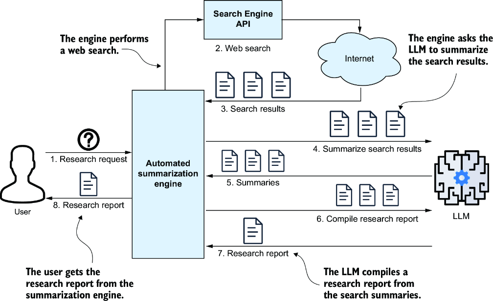
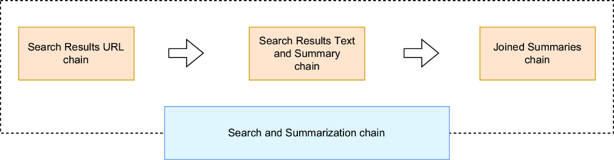
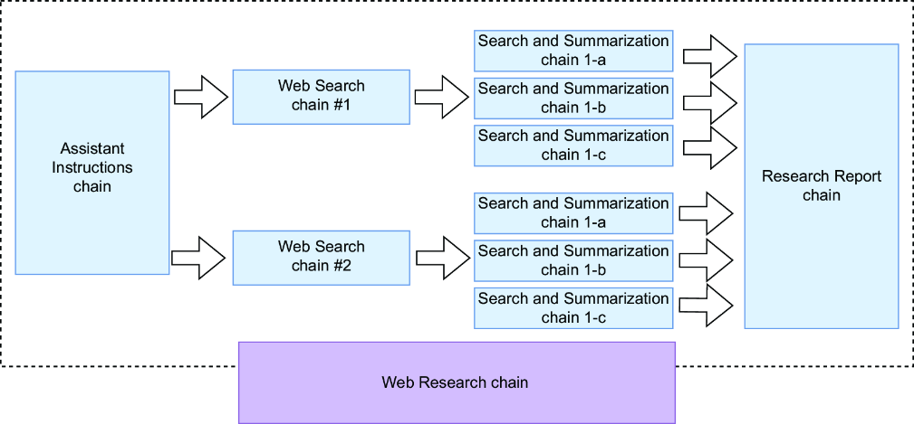
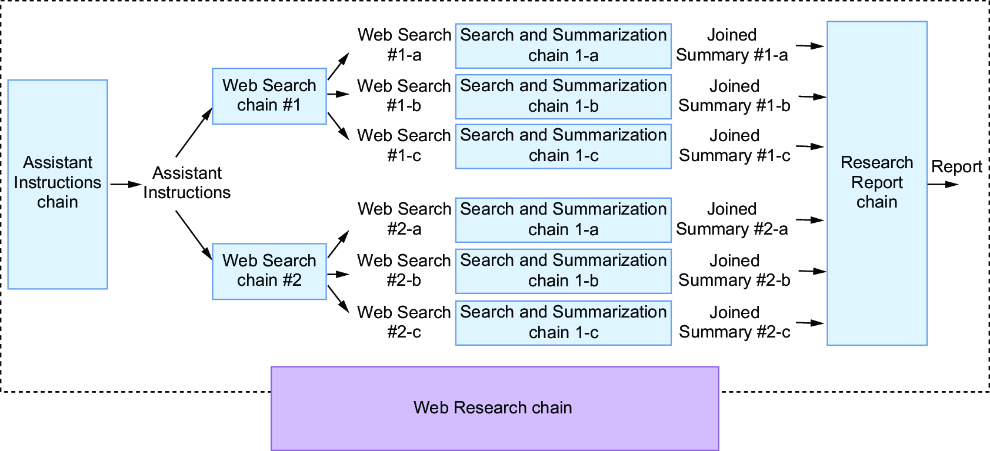

基于第三章的内容摘要技术，本章将指导您创建一个研究摘要引擎。这个大语言模型应用程序将处理用户查询、执行网络搜索，并汇总生成一份全面的研究发现摘要。我们将逐步开发这个项目，从基础开始，逐渐增加复杂性。在此过程中，随着我介绍如何使用LangChain表达式语言（LCEL）创建大语言模型链，您将加深对LangChain的了解。
想象一下，你正在研究各种主题，比如一位特定的NBA球员、一个旅游目的地，或者是否投资某只股票。手动操作时，你会进行网络搜索、筛选结果、阅读相关页面、做笔记并整理摘要。一种现代的方法是让大语言模型来处理这项工作。你可以从每个网页复制文本，粘贴到ChatGPT的提示词中进行总结，并对多个页面重复此操作。然后，将这些摘要合并到一个最终的提示词中，以生成一份整合的摘要（见图4.1）。
一种更高效的方法是开发一个全自动的研究摘要引擎。该引擎能够执行网络搜索、归纳结果并自动汇总生成最终报告（见图4.2）。它是处理任何研究查询的宝贵工具。

我们将使用LangChain构建这个引擎。首先，我们会实现网络搜索和抓取功能，然后设置OpenAI 大语言模型进行摘要生成，最后将所有组件集成到一个Python应用程序中。最初，它将作为可执行文件运行，之后，如果您愿意，可以将其作为REST API对外提供。
我假设您正在使用安装了免费的Python扩展的Visual Studio Code（VS Code）并在Windows上运行。不过，如果您愿意，也可以选择其他Python IDE，比如PyCharm。
我将简要指导你在VS Code中设置Python项目，创建虚拟环境，激活它并安装必要的包。使用你的文件资源管理器或终端，在你的源代码区域创建一个名为ch04的空文件夹，例如：
C:\Github\building-llm-applications\ch04
打开 VS Code，选择 文件 > 打开文件夹，切换到 ch04 文件夹，然后点击 选择文件夹。接下来，在 VS Code 中通过选择 终端 > 新建终端 来打开一个终端。终端应该会显示您刚刚创建的文件夹的路径。在 Windows 上，您会看到类似这样的内容：
PS C:\Github\building-llm-applications\ch04>
如果您刚安装VS Code或者对它还不熟悉，可以通过运行以下命令来启用终端（您只需要执行一次）：
PS C:\Github\building-llm-applications\ch04> Set-ExecutionPolicy
↪-ExecutionPolicy AllSigned -Scope CurrentUser
在这个终端中，像往常一样，创建一个虚拟环境并激活它（为了方便起见，我省略了ch04的完整路径）：
... ch04> python -m venv env_ch04 ... ch04> .\env_ch04\Scripts\activate
如果您在PowerShell中使用activate.ps1激活虚拟环境，可能会弹出提示：“您想要运行来自此不受信任发布者的软件吗？”请输入A（始终运行）以继续。
如果您从GitHub克隆了这个代码仓库，您可以使用如下命令安装所需的包（langchain、langchain_openai、langchain_community、requests、bs4、duckduckgo-search、ddgs）：
(env_ch04) ... ch04> pip install -r requirements.txt -i https://pypi.tuna.tsinghua.edu.cn/simple
安装完所需的包后，我建议创建一个自定义的运行配置，以确保你在刚刚设置的env_ch04虚拟环境中运行和调试代码。要创建此配置，请按照以下步骤操作：
launch.json 文件。{
"version": "0.2.0",
"configurations": [
{
"name": "Python Debugger: Current File", //Python调试器：当前文件
"type": "debugpy",
"request": "launch",
"program": "${file}",
"console": "integratedTerminal",
"python": "${workspaceFolder}/env_ch04/Scripts/python.exe"
}
]
}
注意 如果您使用的是MacOS或Linux系统，请将"python"字段中的路径替换为"${workspaceFolder}/env_ch04/bin/python"。
这个自定义的运行配置确保您的代码在正确的解释器和环境中执行。稍后您将使用它进行调试。一切就绪后，您现在就可以开始编码了！
再次查看图4.2，很明显我们的研究摘要引擎依赖于我们必须提供的两个关键能力：一个用于执行网络搜索，另一个用于从相关网页中提取文本。此外，您还需要一个实用函数来初始化您希望使用的大语言模型客户端实例。
我们将使用LangChain封装的DuckDuckGo搜索引擎来执行网络搜索。其results方法会返回一个对象列表，每个对象都包含一个名称为"link"的属性，其中存储着结果URL。在项目中新建一个名为web_searching.py的空文件，并输入以下代码：
from langchain_community.utilities import DuckDuckGoSearchAPIWrapper
from typing import List
def web_search(
web_query: str,
num_results: int) -> List[str]:
return [r["link"]
for r in DuckDuckGoSearchAPIWrapper().results(
web_query, num_results)]
创建一个单独的Python文件，例如web_searching_try.py，来测试搜索功能：
from web_searching import web_search
result = web_search(
web_query = "How many titles did Michael Jordan win?",
num_results=5)
print(result)
注意 如果您不熟悉 VS Code，可以通过按 F5 键，然后选择 Python Debugger > Python File 来执行代码。您还可以通过按 F10 键逐行设置断点并逐步运行代码。
在终端中，您将获得一个类似如下的URL列表，它们就是您的搜索结果：
['https://en.wikipedia.org/wiki/List_of_career_achievements_by_Michael_Jordan', 'https://sportsbrief.com/nba/40447-michael-jordans-achievements-awards-a-list-mjs-accomplishments/', 'https://www.rookieroad.com/basketball/how-many-championships-does-michael-jordan-have-5263621/', 'https://www.hoopsaddict.com/michael-jordan-awards/', 'https://www.wsn.com/nba/michael-jordan-championship-rings/']
注意 LangChain提供的其他网络搜索引擎封装器包括TavilySearchResults和GoogleSearchAPIWrapper。两者都需要API密钥，因此我选择了DuckDuckGoSearchAPIWrapper，因为它不需要。
我们将使用Beautiful Soup（一个网页抓取库）来抓取结果列表中的网页。请将如下代码清单中的代码放入名称为web_scraping.py的文件中。
web_scraping.py 文件的代码import requests
from bs4 import BeautifulSoup
def web_scrape(url: str) -> str:
try:
headers = { #1
"User-Agent": (
"Mozilla/5.0 (Windows NT 10.0; Win64; x64) "
"AppleWebKit/537.36 (KHTML, like Gecko) "
"Chrome/124.0.0.0 Safari/537.36"
),
"Accept-Language": "en-US,en;q=0.9",
}
response = requests.get(url, headers=headers, timeout=15)
if response.status_code == 200:
soup = BeautifulSoup(response.text, "html.parser")
page_text = soup.get_text(separator=" ", strip=True)
return page_text
else:
return f"Could not retrieve the webpage: Status code
↪{response.status_code}"
except Exception as e:
print(e)
return f"Could not retrieve the webpage: {e}"
让我们尝试将以下代码放入名为web_ scraping_try.py的文件中来测试这个函数：
from web_scraping import web_scrape
result = web_scrape('https://en.wikipedia.org/wiki
↪/List_of_career_achievements_by_Michael_Jordan')
print(result)
运行此脚本后，输出将类似于以下摘录：
List of career achievements by Michael Jordan - Wikipedia Jump to content Main menu Main menu move to sidebar hide Navigation Main page Contents Current events Random article About Wikipedia Contact us Donate Contribute Help Learn to edit Community portal Recent changes Upload file Languages Language links are at the top of the page across from the title. Search web scraping Create account Log in Personal tools [SHORTENED…]
迈克尔·乔丹职业生涯成就列表 - 维基百科 跳转到内容 主菜单 主菜单 移至侧边栏隐藏 导航 首页 目录 当前事件 随机文章 关于维基百科 联系我们 捐赠 贡献 帮助 学习编辑 社区门户 最近更改 上传文件 语言 语言链接位于标题对面、页面的顶部，。 搜索 网络抓取 创建账户 登录 个人工具 [已缩写…]
正如你所见，大部分抓取的内容并不相关，但我们目前无需担心。大语言模型会提取我们感兴趣的相关部分。
对于这个使用场景，我们将采用OpenAI GPT-5 nano模型。首先，在ch04文件夹的根目录下创建一个.env文件，内容如下，并将<YOUR_OPENAI_KEY>替换为您实际的OpenAI API密钥：
OPENAI_API_KEY=<YOUR_OPENAI_KEY>
或者，如果您克隆了GitHub仓库或从曼宁出版社网站下载了代码压缩包，请将.env_example文件重命名为.env，然后将<YOUR_OPENAI_KEY>替换为您实际的OpenAI API密钥。
创建一个函数来实例化OpenAI客户端，如下所示，并将其放置在一个名为llm_models.py的文件中（请将YOUR_OPENAI_API_KEY替换为你的OpenAI密钥）：
from langchain_openai import ChatOpenAI
from dotenv import load_dotenv
import os
load_dotenv() #1
openai_api_key = os.getenv("OPENAI_API_KEY") #2
def get_llm(): #3
return ChatOpenAI(openai_api_key=openai_api_key,
model_name="gpt-5-nano")
让我们创建一个实用函数，将来自大语言模型的JSON文本转换为Python对象，这通常是一个字典，有时也可能是一个List列表。如果JSON格式不正确，它将返回一个空字典。将以下代码添加到名为utilities.py的文件中：
import json
def to_obj(s):
try:
return json.loads(s)
except Exception:
return {}
回顾一下，我们已经建立了一个VS Code项目并实现了所需的核心功能。在构建引擎来协调网络搜索、网页抓取和向大语言模型发送摘要请求之前，让我们退一步，再次审视一下整体架构。
让我们重新审视图4.2中的示意图，为了方便起见，我在这里再次将其作为图4.3进行展示。如果你仔细观察这个架构图，可能会发现一个潜在的改进点：与其将原始的研究请求直接发送给网络搜索引擎，你可以使用大语言模型来创建多个搜索查询。这种技术被称为查询重写或多查询生成，它与一种用于增强检索增强生成（RAG）搜索的方法类似，我将在后续章节中介绍。将原始问题重写为多个查询有几个优点。它可以澄清模糊或不明确的查询，修正可能使搜索引擎困惑的语法或句法错误，并为简短的查询添加上下文以改善搜索结果。

对于复杂查询，将其拆分为更简单的查询，能为获得更佳答案提供有用的上下文。这是将单一查询重写为多个针对性搜索的关键原因。例如，与其向搜索引擎查询“迈克尔·乔丹赢得了多少个冠军头衔？”，不如您按如下方式提示ChatGPT：
生成三个网络搜索查询来研究以下主题，旨在撰写一份全面的报告：“迈克尔·乔丹赢得了多少个冠军头衔？”
您会收到类似这样的查询：
“
因此，引擎将通过执行这三项网络搜索并从每项中收集结果来进行研究。更新后的工作流程如图4.4中的图表所示。

从技术上讲，更新后的架构更为复杂，这可能会因额外的网络搜索而引发对性能的担忧。如果按顺序处理，响应时间将线性增加；例如，运行四次网络搜索将花费四倍的时间。然而，您可以通过并行化来加速处理，我将在后面的章节中介绍这一点。现在，我们将从顺序处理方法开始，稍后再探讨并行化。
在组装第4.3节的构建模块之前，我们需要重点关注一些提示词工程。我们将创建用于生成网络搜索查询、归纳单个网页以及生成最终报告的提示词。让我们逐步解决这些任务。
想象一下，用户提出了一个与金融相关的问题，例如：“我应该投资苹果公司的股票吗？”在指导大型语言模型基于此问题生成网络搜索查询时，指定构建这些查询的角色设定会很有帮助。例如，你可以这样开始提示：“你是一位经验丰富的金融分析师AI助手。你的目标是根据提供的数据和趋势，创建详细、有见地、公正且结构良好的财务报告。”
要根据研究问题动态生成这些指令，您需要使用专门的提示词。首先设计一个提示词，选择合适的科研助手，并根据用户的查询提供定制化的指令。创建一个名为prompts.py的文件，并从如下代码开始。
prompts.py: 生成助手指令from langchain_core.prompts import PromptTemplate
ASSISTANT_SELECTION_INSTRUCTIONS = """
你擅长将研究问题分配给正确的研究助理。
有多种研究助理可供选择，每位都专精于某个专业领域。
每位助理都由一个特定的类型标识。每位助理都配有具体的指令来执行研究。 #1
如何选择正确的助理：你必须根据问题的主题来选择相关的助理，该主题应与助理的专业领域相匹配。
------
以下是一些示例，说明如何根据所提问题返回正确的助理信息。
示例：
问题："我应该投资苹果股票吗？"
响应：
{{
"assistant_type": "Financial analyst assistant",
"assistant_instructions": "You are a seasoned finance
analyst AI assistant. Your primary goal is to compose
comprehensive, astute, impartial, and methodically arranged
financial reports based on provided data and trends.",
"user_question": {user_question}
}}
问题："特拉维夫有哪些最有趣的景点？"
响应：
{{
"assistant_type": "Tour guide assistant",
"assistant_instructions": "You are a world-travelled
AI tour guide assistant. Your main purpose is to draft
engaging, insightful, unbiased, and well-structured
travel reports on given locations, including history,
attractions,
and cultural insights.",
"user_question": "{user_question}"
}}
问题："梅西是一位优秀的足球运动员吗？"
响应：
{{
"assistant_type": "Sport expert assistant",
"assistant_instructions": "You are an experienced AI
sport assistant. Your main purpose is to draft engaging,
insightful, unbiased, and well-structured sport reports on
given sport personalities, or sport events, including
factual details, statistics and insights.",
"user_question": "{user_question}"
}}
------
现在你已经理解了以上所有内容，请为以下问题选择正确的研究助理。
问题：{user_question}
响应：
"""
ASSISTANT_SELECTION_PROMPT_TEMPLATE = PromptTemplate.from_template(
template=ASSISTANT_SELECTION_INSTRUCTIONS
)
这个提示词模板有几个关键特性。首先，它是一个少样本提示，正如包含的三个示例所展示的那样，这有助于大语言模型理解我们的具体要求。其次，它指示大语言模型以JSON格式返回结果，这使得输出被转换为Python字典，这便于后续可以简单直接的处理它们。
在设置好这个提示词来选择适当的助手类型并提供指令后，您现在可以继续创建基于用户问题生成网络搜索的提示词，如下列所示。
prompts.py：用于重写用户查询的提示词WEB_SEARCH_INSTRUCTIONS = """
{assistant_instructions}
请针对以下问题：{user_question}，编写 {num_search_queries} 个网络搜索查询，以尽可能多地收集信息。你的目标是基于你找到的信息撰写一份报告。
你必须以查询列表的形式进行响应，例如 query1, query2, query3，并遵循如下格式：
[
{{"search_query": "query1", "user_question": "{user_question}" }},
{{"search_query": "query2", "user_question": "{user_question}" }},
{{"search_query": "query3", "user_question": "{user_question}" }}
]
"""
WEB_SEARCH_PROMPT_TEMPLATE = PromptTemplate.from_template(
template=WEB_SEARCH_INSTRUCTIONS
)
{assistant_instructions}占位符将被填充为您之前看到的助理选择提示词中的"assistant_ instructions"输出。此提示词同样以JSON格式返回结果，便于将输出转换为Python字典列表以供进一步处理。在输出中包含用户问题，确保了整个过程的连续性，使我们能够根据需要（尤其是在后续的链式代码中）使用它。网络搜索提示词完成后，让我们继续创建摘要提示词。
用于汇总结果页面的提示词与前一章关于摘要的提示词非常相似。代码展示在以下列表中。
prompts.py: 用于汇总结果页面的提示词SUMMARY_INSTRUCTIONS = """
阅读以下文本：
文本：{search_result_text}
-----------
基于以上文本，简短回答以下问题。
问题：{search_query}
如果根据提供的文本无法回答上述问题，
则直接归纳该文本。
如果可用，请包含所有事实信息、数字、统计数据等。
"""
SUMMARY_PROMPT_TEMPLATE = PromptTemplate.from_template(
template=SUMMARY_INSTRUCTIONS
)
同样地，生成研究报告的提示词也相当直接。在下面的列表中，请注意那些清晰且强调性的指令，它们旨在确保大语言模型能够产出期望的输出。
prompts.py: 用于生成研究报告的提示词 # Research Report prompts adapted from
# https://github.com/assafelovic/gpt-researcher/
# blob/master/gpt_researcher/master/prompts.py
RESEARCH_REPORT_INSTRUCTIONS = """
你是一位具有批判性思维的AI研究助手。你的唯一目的是根据给定的文本撰写文笔优美、广受好评、客观且结构严谨的报告。
信息：
--------
{research_summary}
--------
使用以上信息，就以下问题或主题：“{user_question}”撰写一份详细的报告—报告应聚焦于问题的答案，结构清晰、信息丰富、深入透彻，尽可能包含事实和数据，且字数不少于1200字。
你应努力使用所有相关且必要的信息，尽可能详尽地撰写报告。
你必须使用Markdown语法撰写报告。
你必须根据所给信息形成自己具体且有效的观点。切勿推断笼统且无意义的结论。
在报告末尾列出所有使用的来源网址，并确保不添加重复的来源，每个来源仅引用一次。
你必须使用APA格式撰写报告。
请全力以赴，这对我的职业生涯至关重要。"""
RESEARCH_REPORT_PROMPT_TEMPLATE = PromptTemplate.from_template(
template=RESEARCH_REPORT_INSTRUCTIONS
)
在本节中，我将引导您完成我们研究摘要引擎的初始实现，遵循图4.4中架构图所概述的步骤。这个第一版特意设计得易于理解，以便在我引入更高级的优化之前，您能逐一看到流程的每个部分。当您阅读代码时，您会注意到从提示词模板到网络爬虫工具等不同组件是如何相互作用，形成一个完整的研究工作流的。这里的目标不仅是实现引擎，还要建立起对系统各部分如何协同工作的直观理解。到本节结束时，您将拥有一个功能完整的流水线，能够执行自动化网络研究并生成结构化报告。这个基础将为您迎接下一节我们将探讨的改进做好准备，届时我们将从顺序设计转向更高效的基于LCEL的方法。
首先，创建一个名为research_engine_seq.py的Python文件。然后，开始导入你在前面章节中精心编写的函数和提示词模板：
from web_searching import web_search
from web_scraping import web_scrape
from llm_models import get_llm
from utilities import to_obj
from prompts import (
ASSISTANT_SELECTION_PROMPT_TEMPLATE,
WEB_SEARCH_PROMPT_TEMPLATE,
SUMMARY_PROMPT_TEMPLATE,
RESEARCH_REPORT_PROMPT_TEMPLATE
)
现在让我们设定一些常量来配置应用程序。报告的准确性和多样性将取决于您设置的网络搜索次数和每次搜索的结果数量。然而，在设定这些值时，考虑您的预算非常重要。例如，配置四次网络搜索，每次搜索五个结果，将需要归纳20个网页，这意味着每页大约2000个token，总计20 × 2000 = 40000个token。使用OpenAI GPT-5 mini模型，每1000个输出token的成本约为$0.00005，这将使每个研究请求的成本大约为$0.002。我将设置较低的配置数值，但您可以根据需要自由调整：
NUM_SEARCH_QUERIES = 2 NUM_SEARCH_RESULTS_PER_QUERY = 3 RESULT_TEXT_MAX_CHARACTERS = 10000
应用程序中唯一的输入变量是用于捕获用户研究问题的那个：
question = 'What can I see and do in the Spanish town of Astorga?'
实例化大语言模型客户端非常简单。您可以按如下方式轻松完成：
llm = get_llm()
在生成网络搜索并收集结果的过程中，第一步是执行大语言模型提示词，根据用户的研究问题确定正确的研究助手及相关指令：
assistant_selection_prompt = ASSISTANT_SELECTION_PROMPT_TEMPLATE
↪.format(user_question=question)
assistant_instructions = llm.invoke(assistant_selection_prompt)
要执行此代码，请在 llm = get_llm() 这一行设置一个断点。如果你是 VS Code 新手，可以通过点击希望调试器暂停的行号左侧来设置断点。
接下来，通过点击左侧边栏上的“运行与调试(Run & Debug)”图标（或在Windows上使用快捷键Ctrl+Shift+D）来启动调试器。从顶部的下拉菜单中，选择名为“Python调试器(Python Debugger)”：当前文件的运行配置，这是你在4.2节末尾创建的。然后，点击旁边的播放(Play)按钮开始调试。
当代码运行并触发断点时，请在屏幕左上角的变量面板中检查assistant_instructions变量的值。或者，你也可以在VS Code屏幕底部的调试控制台面板中手动打印该值：
print(assistant_instructions)
您将观察到如下输出：
content='{\n "assistant_type": "Tour guide assistant",\n "assistant_instructions": "You are a world-travelled AI tour guide assistant. Your main purpose is to draft engaging, insightful, unbiased, and well-structured travel reports on given locations, including history, attractions, and cultural insights.",\n "user_question": "What can I see and do in the Spanish town of Astorga"\n}' response_metadata={'token_usage': {'completion_tokens': 82, 'prompt_tokens': 432, 'total_tokens': 514}, 'model_name': 'gpt-4o-mini-2024-07-18', 'system_fingerprint': 'fp_3bc1b5746c', 'finish_reason': 'stop', 'logprobs': None}
相关信息位于content属性中。要将其转换为Python对象，您可以按如下步骤操作：
assistant_instructions_dict = to_obj(assistant_instructions.content)
打印assistant_instructions_dict变量将得到如下输出：
{'assistant_type': 'Tour guide assistant', 'assistant_instructions': 'You are a world-travelled AI tour guide assistant. Your main purpose is to draft engaging, insightful, unbiased, and well-structured travel reports on given locations, including history, attractions, and cultural insights.', 'user_question': 'What can I see and do in the Spanish town of Astorga?'}
现在，您可以执行提示词，基于原始用户研究问题生成网络搜索：
web_search_prompt = WEB_SEARCH_PROMPT_TEMPLATE.format(
assistant_instructions=assistant_instructions_dict[
'assistant_instructions'],
num_search_queries=NUM_SEARCH_QUERIES,
user_question=assistant_instructions_dict[
'user_question'])
web_search_queries = llm.invoke(web_search_prompt)
web_search_queries_list = to_obj(
web_search_queries.content.replace('\n', ''))
此提示词的主要输入是上一步的assistant_instructions输出。如果你要执行刚刚编写的代码，在打印web_ search_queries_list时，你会得到一个类似这样的搜索查询列表：
[{'search_query': 'Astorga attractions', 'user_question': 'What can I see and do in the Spanish town of Astorga?'}, {'search_query': 'Astorga history', 'user_question': 'What can I
see and do in the Spanish town of Astorga?'}]
以下是使用web_search()函数获取网络搜索的方法：
searches_and_result_urls = [{
'result_urls': web_search(
web_query=wq['search_query'],
num_results=NUM_SEARCH_RESULTS_PER_QUERY),
'search_query': wq['search_query']}
for wq in web_search_queries_list]
执行到这一步，searches_and_result_urls 变量将保存一个类似这样的Python字典列表：
[{'result_urls': ['https://igotospain.com/one-day-in-astorga-on-the-camino-de-santiago/', 'https://worldfreetours.com/blog/astorga/explore-astorga-for-free/', 'https://budtravelagency.com/things-to-do-in-astorga-spain/'], 'search_query': '阿斯托尔加可做之事'}, {'result_urls': ['https://igotospain.com/one-day-in-astorga-on-the-camino-de-santiago/', 'https://worldfreetours.com/blog/astorga/explore-astorga-for-free/', 'https://www.thingstodoguru.com/things-to-do-in-astorga-es'], 'search_query': '阿斯托尔加顶级景点'}, {'result_urls': ['https://www.worldatlas.com/cities/astorga-spain.html', 'https://citiesandattractions.com/spain/astorga-spain-uncovering-the-jewels-of-a-hidden-spanish-gem/', 'https://ewtn.co.uk/article-spanish-civil-war-martyrs-of-astorga-didnt-let-themselves-be-overcome-by-fear/'], 'search_query': '西班牙阿斯托尔加的历史'}]
每个字典显示一个搜索查询及其对应的结果URL（此处每个查询有三个结果）。下一步是展平结果，使每个字典只包含一个搜索查询和一个结果URL：
search_query_and_result_url_list = []
for qr in searches_and_result_urls:
search_query_and_result_url_list.extend([{
'search_query': qr['search_query'],
'result_url': r}
for r in qr['result_urls']])
现在 search_query_and_result_url_list 包含了六个字典对象，正如预期的那样：
[{'search_query': 'Astorga attractions', 'result_url': 'https://www.worldatlas.com/cities/astorga-spain.html'}, {'search_query': 'Astorga attractions', 'result_url': 'https://citiesandattractions.com/spain/astorga-spain-uncovering-the-jewels-of-a-hidden-spanish-gem/'}, {'search_query': 'Astorga attractions', 'result_url': 'https://www.caminoadventures.com/blog/two-weeks-on-the-camino-de-santiago/'}, {'search_query': 'Astorga cultural sites', 'result_url': 'https://www.worldatlas.com/cities/astorga-spain.html'}, {'search_query': 'Astorga cultural sites', 'result_url': 'https://interrailero .com/que-ver-en-astorga/'}, {'search_query': 'Astorga cultural sites', 'result_url': 'https://www.atlasobscura.com/places/palacio-episcopal'}]
准备好网络搜索查询和所有相关结果URL后，下一步就是开始抓取这些URL所链接的网页。
现在，你将使用web_scrape()函数从搜索结果链接的网页中提取文本。以下是实现此功能的代码：
result_text_list = [{
'result_text': web_scrape(
url=re['result_url'])[:RESULT_TEXT_MAX_CHARACTERS],
'result_url': re['result_url'],
'search_query': re['search_query']}
for re in search_query_and_result_url_list]
这段代码向result_text_list填充了六个字典对象，每个字典对象都携带来自一个网页的文本：
[{'result_text': '西班牙阿斯托加 - WorldAtlas 西班牙阿斯托加 阿斯托加是西班牙西北部的一个市镇，居民人数略超11,000人（根据最新的2018年估计数据）。这座前罗马定居点（至今仍部分被古老的、尽管是重建的城墙所环绕）是传统地区马拉加特里亚的首府，… Science Social Science Society Economics Politics About Us Contact Us Privacy Copyright Search WorldAtlas', 'result_url': 'https://www.worldatlas.com/cities/astorga-spain.html', 'search_query': 'Astorga attractions'},
{'result_text': "西班牙阿斯托加：揭开一颗隐藏的西班牙宝石的面纱 跳转到内容 城市与景点 漫游世界：您的探索指南 搜索： 城市与景点 关闭菜单 城市与景点 … 揭开一颗隐藏的西班牙宝石的面纱 2023年3月13日 2023年5月28日 西班牙 探索西班牙阿斯托加的魅力——从令人惊叹的大教堂和博物馆，到巧克力工厂博物馆和高迪宫等隐藏的瑰宝… ", 'result_url': 'https://citiesandattractions.com/spain/astorga-spain-uncovering-the-jewels-of-a-hidden-spanish-gem/'}, … ]
下一步是归纳从每个网页收集到的信息。
你将要求大语言模型使用之前设置的SUMMARY_PROMPT_TEMPLATE来归纳每个网页的文本。这个摘要也会保留原始的搜索查询和URL，这些信息你稍后会需要：
result_text_summary_list = []
for rt in result_text_list:
summary_prompt = SUMMARY_PROMPT_TEMPLATE.format(
search_result_text=rt['result_text'],
search_query=rt['search_query'])
text_summary = llm.invoke(summary_prompt)
result_text_summary_list.append({
'text_summary': text_summary,
'result_url': rt['result_url'],
'search_query': rt['search_query']})
这个过程产生了一个包含九个字典对象的列表result_text_summary_list。每个字典对象包含了抓取文本的摘要、找到它的URL以及用于查找它的搜索查询：
[{'text_summary': '\n阿斯托尔加是西班牙西北部的一个市镇，人口超过11,000人。它是莱昂省马拉加特里亚县的首府，位于卡斯蒂利亚-莱昂自治区内……圣地亚哥朝圣之路上的朝圣者。', 'result_url': 'https://www.worldatlas.com/cities/astorga-spain.html', 'search_query': 'Astorga attractions'}, {'text_summary': '\n西班牙阿斯托尔加的一些主要景点包括……文化以及自然美景。', 'result_url': 'https://citiesandattractions.com/spain/astorga-spain-uncovering-the-jewels-of-a-hidden-spanish-gem/', 'search_query': 'Astorga attractions'}, …]
通过这些摘要，您已经为最终研究报告收集了所有必要的信息。
让我们回顾一下用于创建最终报告的提示词。在这个阶段，流水线的所有早期组件汇集在一起，模型最终获得了生成一个连贯、结构化响应所需的全部汇总信息：
RESEARCH_REPORT_INSTRUCTIONS = """
你是一个具有批判性思维的AI研究助手。
你的唯一目的是根据给定的文本，
撰写文笔优美、广受好评、客观且结构严谨的报告。
信息：
--------
{research_summary}
--------
使用以上信息，回答如下问题……
……
"""
让我们通过将摘要和URL合并成提示词模板期望的格式来准备最终报告。首先，将每个字典对象转换为包含摘要及其来源URL的字符串：
stringified_summary_list = [
f'Source URL: {sr["result_url"]}\nSummary: {sr["text_summary"]}'
for sr in result_text_summary_list]
检查 stringified_summary_list 时，你会发现类似这样的条目：
['Source URL：https://www.worldatlas.com/cities/astorga-spain.html\n摘要：\n阿斯托加是西班牙西北部的一个市镇，人口超过11,000人。它是马拉加特里亚地区的首府……圣地亚哥朝圣之路上的朝圣者。', 'Source URL：https://citiesandattractions.com/spain/astorga-spain-uncovering-the-jewels-of-a-hidden-spanish-gem/\n摘要：\n西班牙阿斯托加的一些主要景点包括主教宫、大教堂……和自然美景。', …]
接下来，将所有摘要字符串合并为一个：
appended_result_summaries = '\n'.join(stringified_summary_list)
这会给你一个包含所有摘要和URL的单一文本块：
来源网址：https://www.worldatlas.com/cities/astorga-spain.html 摘要： 阿斯托加是西班牙西北部的一个市镇，人口超过11,000人。它是马拉加特里亚地区的首府……阿斯托加拥有丰富的历史，曾是罗马人的定居点，并因各种冲突经历了衰落与复兴的时期。它是圣地亚哥朝圣之路上的旅游者和朝圣者热门停留点。 来源网址：https://citiesandattractions.com/spain/astorga-spain-uncovering-the-jewels-of-a-hidden-spanish-gem/ 摘要： 西班牙阿斯托加的一些主要景点包括主教宫、阿斯托加圣玛丽亚大教堂、罗马城墙和博物馆、巧克力工厂博物馆、高迪宫……
现在使用此内容配合RESEARCH_REPORT_INSTRUCTIONS提示词模板来获取最终的研究报告：
research_report_prompt = RESEARCH_REPORT_PROMPT_TEMPLATE.format(
research_summary=appended_result_summaries,
user_question=question
)
research_report = llm.invoke(research_report_prompt)
print(f'strigified_summary_list={stringified_summary_list}')
print(f'merged_result_summaries={appended_result_summaries}')
print(f'research_report={research_report}')
如果你运行整个research_engine_seq.py脚本，大约一分钟后，你将收到一份基于网络摘要的完整研究报告，如下所示：
# 简介 阿斯托加是一个迷人的小镇，位于西班牙西北部地区，拥有超过11,000名居民。它是卡斯蒂利亚-莱昂自治区莱昂省马拉加特里亚县的首府。阿斯托加以其丰富的历史、文化意义和自然美景而闻名。它是圣地亚哥朝圣之路上的热门目的地，有两条朝圣路线在此交汇。在本报告中，我们将探索在西班牙小镇阿斯托加可以参观和体验的主要景点与活动。 # 历史与文化意义 阿斯托加是一个历史悠久、底蕴深厚的小镇，其历史可追溯至罗马帝国时期。它曾是罗马人的定居点，并因各种冲突经历了衰落与复兴。如今，游客仍能看到罗马城墙和遗址的遗迹，这是阿斯托加的主要景点之一。该市还拥有15世纪的阿斯托加大教堂，融合了哥特式、文艺复兴式和巴洛克式风格，以及由著名加泰罗尼亚建筑师安东尼·高迪设计的新哥特式主教宫。 [… 已缩写]
恭喜你完成了首次自动化网络调研！我建议你再次仔细查看这个初始实现的代码。如果你之前没有时间输入并运行它，请务必查看GitHub仓库中的代码。你可能一看就懂，但回顾一遍有助于确保所有细节都清晰明了。
这个初始版本运行良好，并生成了预期的研究报告。然而，由于它是按顺序处理任务的，所以速度有点慢。如果我们当初设置它来处理10次网络搜索，每次返回10个结果，所需的时间将会显著增加。
我们能让它执行得更快点吗？当然可以。在下一节中，我们将探讨如何通过LangChain表达式语言(LCEL)来实现这一点，这在第三章中已经介绍过。
LangChain表达式语言(LCEL)提供了一种结构化方法，用于将大语言模型应用的核心组件—如网络搜索、页面抓取和摘要生成—组织成高效的链或流水线。该框架不仅简化了从简单元素构建复杂工作流的过程，还通过流式处理、并行执行和日志记录等高级功能增强了这些工作流。
LangChain表达式语言(LCEL)通过提供统一的接口（Runnable协议）、组合工具以及轻松实现流程并行化的能力，简化了复杂链的创建过程。虽然掌握LangChain表达式语言(LCEL)可能需要一些练习，但这份努力是值得的，因为它能显著提升应用程序的性能和可扩展性。
我的链式实现策略，如图4.5所示，涉及为前面展示的每个处理步骤构建一个微型链，并将这些链集成到一个主Web研究链中。

这个主Web研究链处理整个流程，如图4.5所示，该图展示了基于链的研究摘要引擎的架构。每个处理步骤都实现为一个微型链，全部集成到主web研究链中：
搜索与摘要链在一个统一的工作流中协调三个底层链。如图4.6所示。

图4.6中的示意图展示了这三个链如何交互：一个生成查询的搜索链，一个处理所得网页的抓取与摘要链，以及一个将所有摘要合并成一个最终文本块的整合链。如图4.7所示，将此过程重新实现为链，可以实现并行执行，与图4.5中的顺序方法相比，效率显著提高。

图4.7突出了两个关键阶段的并行化：
在了解了基于链式方法的概述后，我们现在将探讨各个微型链。让我们从助手指令链开始。
要开始处理一个研究问题，首要任务是确定最相关的研究助手及其提示指令。这由assistant_ instructions_chain处理，如下所示。请将此代码放入名为chain_1_1.py的文件中：
from llm_models import get_llm
from prompts import (
ASSISTANT_SELECTION_PROMPT_TEMPLATE,
)
from langchain_core.output_parsers import StrOutputParser
assistant_instructions_chain = (
ASSISTANT_SELECTION_PROMPT_TEMPLATE | get_llm()
)
对于初次接触LCEL语法的人来说，这里的流程非常直观：选择提示词会输入到大语言模型中，然后大语言模型会根据用户的问题选择一个研究助手。要测试这个设置，请使用以下脚本，保存为chain_try_1_1.py：
from chain_1_1 import assistant_instructions_chain question = 'What can I see and do in the Spanish town of Astorga?' assistant_instructions = assistant_instructions_chain.invoke(question) print(assistant_instructions)
运行此代码将产生类似于第4.6.4节中所示的输出，详细说明助手类型、指令和用户问题（输出将在几秒钟后出现，元数据可能与我在此报告的内容略有不同）：
content='{\n "assistant_type": "Tour guide assistant",\n "assistant_instructions": "You are a world-travelled AI tour guide assistant. Your main purpose is to draft engaging, insightful, unbiased, and well-structured travel reports on given locations, including history, attractions, and cultural insights.",\n "user_question": "What can I see and do in the Spanish town of Astorga?"\n}' response_metadata={'token_usage': {'completion_tokens': 82, 'prompt_tokens': 432, 'total_tokens': 514}, 'model_name': 'gpt-4o-mini-2024-07-18', 'system_fingerprint': 'fp_3bc1b5746c', 'finish_reason': 'stop', 'logprobs': None}
虽然你可以手动从content属性中提取所需的输出，但使用LCEL提供了一种更高效的方法。通过在你的链中添加一个StrOutputParser()块，你可以直接从content属性中自动提取大语言模型的响应。相应地更新链，并将其保存为chain_1_2.py：
from llm_models import get_llm
from utilities import to_obj
from prompts import (
ASSISTANT_SELECTION_PROMPT_TEMPLATE,
)
from langchain_core.runnables import RunnablePassthrough
from langchain_core.output_parsers import StrOutputParser
assistant_instructions_chain = (
{'user_question': RunnablePassthrough()}
| ASSISTANT_SELECTION_PROMPT_TEMPLATE
| get_llm() | StrOutputParser() | to_obj
)
这个更新版本引入了多项改进：
ASSISTANT_SELECTION_PROMPT_TEMPLATE 会自动将输入的问题文本匹配至 {user_question} 字段（有关 {user_question} 的详细说明可参见第 4.5.1 节），但为确保安全性，更推荐显式地将输入问题映射到 Python 字典中的 user_question 属性，方法是使用 RunnablePassthrough() 函数，该函数通过无名参数将外部输入绑定至 user_question 变量。此举亦具优势，因为该信息对后续处理步骤至关重要。to_obj()将大模型响应转换为一个Python字典对象，便于在链式流程中直接操作与调用。使用此脚本测试修订后的链，保存为 chain_try_1_2.py：
from chain_1_2 import assistant_instructions_chain
question = 'What can I see and do in the Spanish town of Astorga?'
assistant_instructions_dict
↪= assistant_instructions_chain.invoke(question) #1
print(assistant_instructions_dict)
运行此代码应产生预期的输出：
{'assistant_type': 'Tour guide assistant', 'assistant_instructions': 'You are a world-travelled AI tour guide assistant. Your main purpose is to draft engaging, insightful, unbiased, and well-structured travel reports on given locations, including history, attractions, and cultural insights.', 'user_question': 'What can I see and do in the Spanish town of Astorga?'}
在大语言模型选择了合适的研究助手并详细说明其角色后，您可以提示大语言模型生成与用户查询相关的网络搜索。请使用以下代码，保存为chain_2_1.py，来完成此步骤。
from llm_models import get_llm
from utilities import to_obj
from prompts import (
WEB_SEARCH_PROMPT_TEMPLATE
)
from langchain_core.output_parsers import StrOutputParser
from langchain_core.runnables import RunnableLambda
NUM_SEARCH_QUERIES = 2
web_searches_chain = (
RunnableLambda(lambda x:
{
'assistant_instructions': x['assistant_instructions'],
'num_search_queries': NUM_SEARCH_QUERIES,
'user_question': x['user_question']
}
)
| WEB_SEARCH_PROMPT_TEMPLATE
| get_llm() | StrOutputParser() | to_obj
)
此实现使用一个RunnableLambda代码块来处理来自前一个链的输入，将其转换为WEB_SEARCH_PROMPT_TEMPLATE所需的格式。然后，该链的处理方式与之前的示例类似。要测试此链，您可以使用以下脚本，将其保存为chain_try_2_1.py。
from utilities import to_obj
from chain_2_1 import web_searches_chain
# 测试链式调用
assistant_instruction_str = '{"assistant_type":
↪"Tour guide assistant",
↪"assistant_instructions": "You are a world-travelled
↪AI tour guide assistant. Your main purpose is to draft
↪engaging, insightful, unbiased, and well-structured travel
↪reports on given locations, including history, attractions,
↪and cultural insights.",
↪"user_question": "What can I see and do in the Spanish
↪town of Astorga?"}'
assistant_instruction_dict = to_obj(assistant_instruction_str)
web_searches_list = web_searches_chain.invoke(assistant_instruction_dict)
print(web_searches_list)
该脚本使用assistant_instruction_str中的模拟输入来模仿助手指令链的输出，测试链对此输入的响应。预期输出如下所示：
[{'search_query': 'Things to do in Astorga Spain', 'user_question': 'What can I see and do in the Spanish town Astorga'}, {'search_query': 'Attractions in Astorga Spain', 'user_question': 'What can I see and do in the Spanish town Astorga'}, {'search_query': 'Historical sites in Astorga Spain', 'user_question': 'What can I see and do in the Spanish town Astorga'}]
网页搜索现在已经生成。接下来让我们继续进行搜索与摘要链。
搜索与摘要链旨在根据前一个链的查询执行网络搜索，从搜索结果中获取URL，抓取相应的网页，然后对每个页面进行摘要。如图4.6所示，此过程被拆分为更小的子链：
我们将从构建这些子链开始，首先从搜索结果URL链着手。
该子链执行网络搜索，从搜索结果中检索特定数量的URL。将以下代码保存为chain_3_1.py。
from web_searching import web_search
from langchain_core.runnables import RunnableLambda
NUM_SEARCH_RESULTS_PER_QUERY = 3
search_result_urls_chain = (
RunnableLambda(lambda x:
[
{
'result_url': url,
'search_query': x['search_query'],
'user_question': x['user_question']
}
for url in web_search(
web_query=x['search_query'],
num_results=NUM_SEARCH_RESULTS_PER_QUERY)
]
)
)
以下是需要注意的几个关键点：
web_query参数传递给web_search()函数。该函数将输出格式化为一个字典列表，每个字典包含检索返回的URL，以及来自前序链(如网络搜索链)的上下文数据，例如当前搜索查询与原始用户问题。这些字段在后续处理阶段中至关重要。为了测试这个子链，我们将使用模拟输入来模拟来自网络搜索链的数据。将以下列表所示的测试代码保存到名为chain_try_3_1.py的文件中。
from utilities import to_obj
from chain_3_1 import search_result_urls_chain
# 测试链调用
web_search_str = '{"search_query":
↪"Astorga Spain attractions",
↪"user_question": "What can I see and do in the
↪Spanish town of Astorga?"}'
web_search_dict = to_obj(web_search_str)
result_urls_list = search_result_urls_chain.invoke(web_search_dict)
print(result_urls_list)
执行后，您应该会看到类似这样的输出：
[{'result_url': 'https://loveatfirstadventure.com/astorga-spain/', 'search_query': 'Astorga Spain attractions', 'user_question': 'What can I see and do in the Spanish town Astorga?'}, {'result_url': 'https://igotospain.com/one-day-in-astorga-on-the-camino-de-santiago/', 'search_query': 'Astorga Spain attractions', 'user_question': 'What can I see and do in the Spanish town Astorga'}, {'result_url': 'https://citiesandattractions.com/spain/astorga-spain-uncovering-the-jewels-of-a-hidden-spanish-gem/', 'search_query': 'Astorga Spain attractions', 'user_question': 'What can I see and do in the Spanish town Astorga'}]
搜索结果文本与摘要子链通过执行以下操作来处理来自前一个子链的URL：
这些步骤在以下代码中得到了有效实现，应将其保存为chain_4_1.py。
from llm_models import get_llm
from web_scraping import web_scrape
from langchain_core.output_parsers import StrOutputParser
from langchain_core.runnables import RunnableLambda, RunnableParallel
from prompts import (
SUMMARY_PROMPT_TEMPLATE
)
RESULT_TEXT_MAX_CHARACTERS = 10000
search_result_text_and_summary_chain = (
RunnableLambda(lambda x:
{
'search_result_text':
web_scrape(url=x['result_url'])[
:RESULT_TEXT_MAX_CHARACTERS],
'result_url': x['result_url'],
'search_query': x['search_query'],
'user_question': x['user_question']
}
)
| RunnableParallel (
{
'text_summary': SUMMARY_PROMPT_TEMPLATE
| get_llm() | StrOutputParser(),
'result_url': lambda x: x['result_url'],
'user_question': lambda x: x['user_question']
}
)
| RunnableLambda(lambda x:
{
'summary':
f"Source Url: {x['result_url']}\nSummary:
↪{x['text_summary']}",
'user_question': x['user_question']
}
)
)
该代码遵循先前链中建立的惯例，您可能还记得第3章中RunnableParallel的用途。RunnableParallel块允许同时执行一个内部链（位于text_summary旁边）以及其他依赖于相同输入的操作（在本例中，是两个lambda函数），该输入来自初始的RunnableLambda块。要执行此链，请将以下脚本保存为chain_try_4_1.py。
from utilities import to_obj
from chain_4_1 import search_result_text_and_summary_chain
# 测试链调用
result_url_str = '{"result_url":
↪"https://citiesandattractions.com/spain/astorga-spain
↪-uncovering-the-jewels-of-a-hidden-spanish-gem/",
↪"search_query":"Astorga Spain attractions",
↪"user_question": "What can I see and do in the Spanish
↪town of Astorga?"}'
result_url_dict = to_obj(result_url_str)
search_text_summary =
↪search_result_text_and_summary_chain.invoke(result_url_dict)
print(search_text_summary)
您将获得类似如下的输出：
{'summary': 'Source Url: https://citiesandattractions.com/spain/astorga-spain-uncovering-the-jewels-of-a-hidden-spanish-gem/\nSummary: \n西班牙阿斯托加拥有多个景点，包括主教宫、圣玛丽亚德阿斯托加大教堂、罗马城墙与博物馆、巧克力工厂博物馆、高迪宫、安卡雷斯山脉以及众多酒庄。这座城镇以其历史、建筑、美食和自然美景而闻名。它提供独特的烹饪体验，例如传统菜肴“Cocido Maragato”，并且拥有众多等待被发现的隐藏瑰宝。', 'user_question': '在西班牙小镇阿斯托加，我可以看什么和做什么？'}
我们已经集齐了构建搜索与摘要链的所有关键组件。在深入LCEL实现之前，请花点时间回顾一下图4.8。与之前的图4.6相比，这张图能让你更清晰地理解整个流程。

如图4.8所示，搜索结果URL链会生成多个URL，每个URL都会触发一个结果文本与摘要链的实例。这些实例并行运行，各自为其对应的网页生成摘要。随后，合并摘要链将这些摘要整合成一个单一的文本块。要实现此过程，请将必要的代码放入名为chain_5_1.py的文件中。
from llm_models import get_llm
from prompts import (
RESEARCH_REPORT_PROMPT_TEMPLATE
)
from chain_1_2 import assistant_instructions_chain
from chain_2_1 import web_searches_chain
from chain_3_1 import search_result_urls_chain
from chain_4_1 import search_result_text_and_summary_chain
from langchain_core.output_parsers import StrOutputParser
from langchain_core.runnables import RunnableLambda
search_and_summarization_chain = (
search_result_urls_chain
| search_result_text_and_summary_chain.map() # 为每个URL并行处理
| RunnableLambda(lambda x:
{
'summary': '\n'.join([i['summary'] for i in x]),
'user_question': x[0]['user_question'] if len(x) > 0 else ''
})
)
map()运算符会触发多个结果文本和摘要链的实例，每个实例对应搜索结果URL链中包含URL的字典。这使得每个实例能够同时运行。
此外，合并摘要子链直接集成在更大的搜索和摘要链中，而非作为一个独立的实体。该子链合并了来自每个结果文本和摘要链实例的摘要，作为整个流程的核心部分发挥作用。有了这些组件，您就可以完成网络研究链了。
在深入实现之前，让我们先查看图4.9，以详细了解网络研究链。这建立在图4.7所介绍内容的基础上，类似于我们在搜索与摘要链中采用的方法。

如图4.9所示，来自网络搜索链的网络搜索会触发多个搜索与摘要链实例并行运行。每个链为特定的网络搜索生成摘要，然后这些摘要由研究报告链合并，以创建最终的研究报告。该过程的LCEL实现概述如下。将此代码添加到chain_5_1.py文件中。
web_research_chain = (
assistant_instructions_chain
| web_searches_chain
| search_and_summarization_chain.map() # 为每个网络搜索并行化处理
| RunnableLambda(lambda x:
{
'research_summary': '\n\n'.join([i['summary'] for i in x]),
'user_question': x[0]['user_question'] if len(x) > 0 else ''
})
| RESEARCH_REPORT_PROMPT_TEMPLATE | get_llm() | StrOutputParser()
)
此设置遵循与搜索和摘要链相同的逻辑。这里使用map()操作符来启动多个搜索和摘要子链实例，使它们能够并发运行。然后，研究报告链被整合为整个网络研究链的一部分。要测试网络研究链，请使用以下脚本，并将其保存为chain_try_5_1.py。
from chain_5_1 import web_research_chain question = 'What can I see and do in the Spanish town of Astorga?' web_research_report = web_research_chain.invoke(question) print(web_research_report)
运行此操作后，你将获得一份按照提示词要求以Markdown格式编排的研究报告。请注意，为简洁起见，此处示例报告已缩写：
# 简介 阿斯托加是西班牙西北部的一个小镇，或许并非人人都会将其列入旅行清单，但它却是一颗等待被发现的隐藏瑰宝。其历史可追溯至古罗马时代，拥有丰富的历史底蕴、令人惊叹的建筑、美味的当地美食和自然风光，在阿斯托加有许多值得一看和体验的事物。在本报告中，我们将探索阿斯托加的主要景点和活动， 以及规划前往这个迷人西班牙小镇旅行的实用信息。 # 阿斯托加的历史 阿斯托加的历史可以追溯到公元前14年建立的古罗马定居点阿斯图里卡·奥古斯塔。该镇曾是一个重要的采矿中心，其位于朝圣之路（圣地亚哥之路的一部分）上的战略位置，使其成为朝圣者的重要停靠点。几个世纪以来，阿斯托加曾被西哥特人、摩尔人和基督徒等多个文明征服和统治。这里也曾是许多激烈战役的发生地，包括西班牙内战。尽管过去动荡不安，阿斯托加依然坚韧地存续下来，如今已成为一个拥有丰富文化遗产的宁静而迷人的小镇。 # 阿斯托加的主要景点 ## 主教宫 最具标志性的景点之一……
恭喜！你已经构建了一个基于LCEL的链，它整合了子链、内联链、lambda函数和并行化处理。这次动手实战会让你更容易创建自己的LCEL链。我建议花些时间在这个应用中尝试不同的链。调整提示词，改变生成的查询数量，或者根据你心中特定的网络研究类型来定制这个应用。
注意 您所构建的研究摘要引擎的灵感来源于一个名为GPT Researcher的开源项目。浏览其GitHub仓库（https://github.com/assafelovic/gpt-researcher，将向您展示一个支持多种搜索引擎和大型语言模型的强大平台，该平台具备记忆和压缩等功能。虽然它并未使用LCEL，但将其核心功能适配到基于LCEL的框架中，旨在为您阐明若干技术细节。如果可能，我建议您探索GPT Researcher的代码仓库，并在您的计算机上运行该项目。这是了解如何构建一个大语言模型应用程序（包括Web UI集成等超越引擎本身的方面）的绝佳方式。
|）进行链式操作，以组成顺序转换；每个组件的输出自动成为下一个组件的输入。RunnableParallel 支持在相同输入上同时执行多个操作，通过将操作封装在 RunnableParallel({"key1": operation1, "key2": operation2}) 中，即可实现并发运行。.map() 操作符会为列表中的每一项触发一个独立的链实例，使用 chain.map() 可对URL或搜索结果进行并行处理，每个实例均同时运行。RunnableLambda 用于将 Python 函数封装为可在 LCEL 链中使用的可运行对象，通过 from langchain_core.runnables import RunnableLambda 导入，并使用 RunnableLambda(lambda x: your_function(x)) 进行实例化。Runnable 协议，包含以下方法：.invoke()（单次执行），.stream() (流式输出)和.batch()（批量处理），每个方法均配有用于并发操作的异步版本。RunnablePassthrough在保留原始输入的同时，允许附加其他操作，可用于将原始问题贯穿整个链，同时从中生成搜索查询。